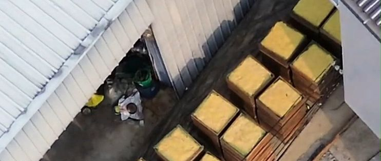

10月16日上午，爱煮桂花蜜的朋友老陈转来一段暗访视频：广西桂林阳朔县白沙镇，有加工点当街烧硫磺、密闭熏蒸桂花。
当天，阳朔县食药安办通报——核查属实，已对涉事桂花干流向紧急追溯，全县拉网排查，涉事商户被依法处置。有报道提到，这一进一出“一斤能赚差价 500元”。
你以为是“卖相好”，其实是“下手早”。这笔账，得从头算。
老陈问我，那以后还敢不敢买桂花。其实更该问的是：为什么总有人敢熏？
答案在成本里。正规无硫桂花要靠时间、人工阴干，成本高；硫磺几块钱一斤，一把火就能把陈货、次品熏成“金灿灿的好货”，终端卖到百余元一斤。而对消费者来说，二氧化硫残留肉眼根本看不出来——只能看卖相、闻香气。
当“好看”能靠几块钱的硫磺伪造，暴利就会一直有市场。
追溯和排查是监管的事，咱们手里能做的其实很具体。
别只认“金灿灿”：自然晾晒的桂花干偏暗黄、褐色，气味清香不刺鼻；过分鲜亮、带酸涩味的，要多个心眼。太便宜的也要留神——无硫的成本摆在那儿，偏离太多就要问一句为什么。
别让“平替”思维，用在最不该省的地方。食材上省下的每一分，都可能变成身体里的债。
后来老陈还是下单了——这次他专门问了句“是不是无硫的”，贵了两成，他说踏实。
监管在追查流向，我们能做的是改掉“看卖相下单”的习惯。认准无硫、别贪便宜，才是普通人手里最稳的那本账。